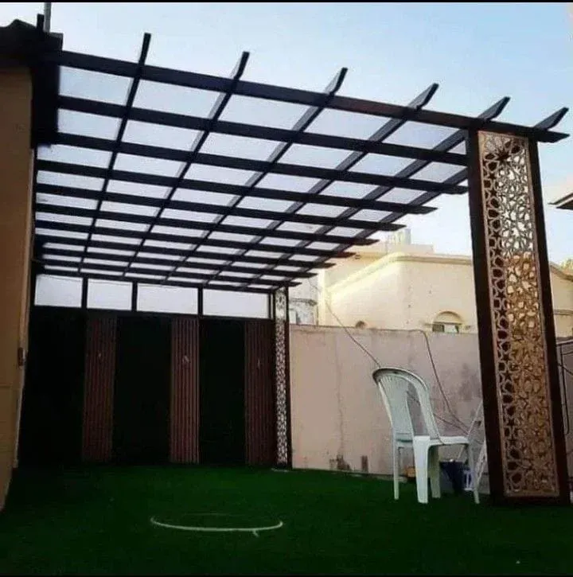
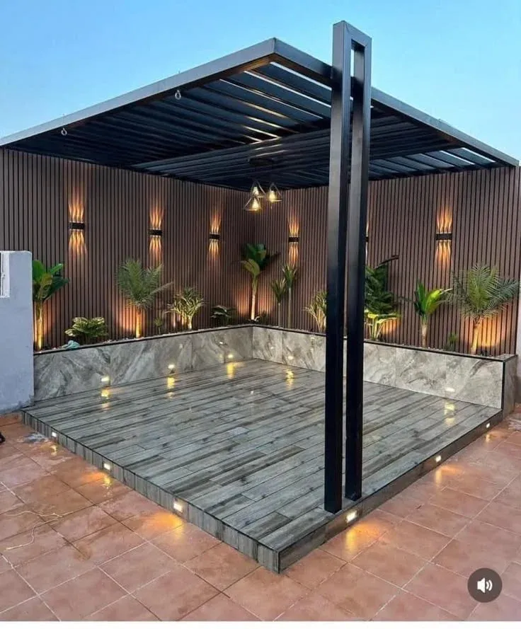
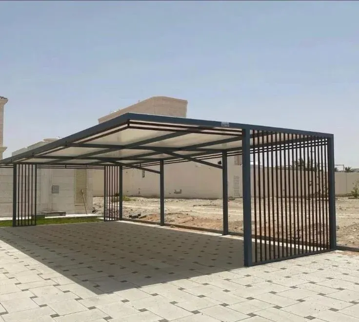
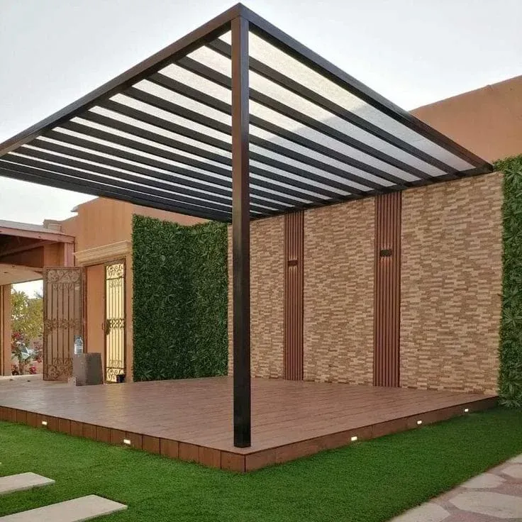
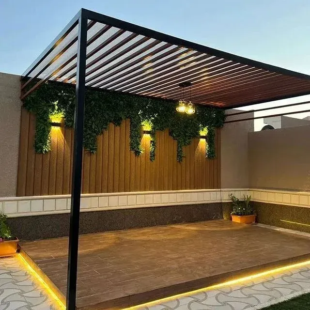
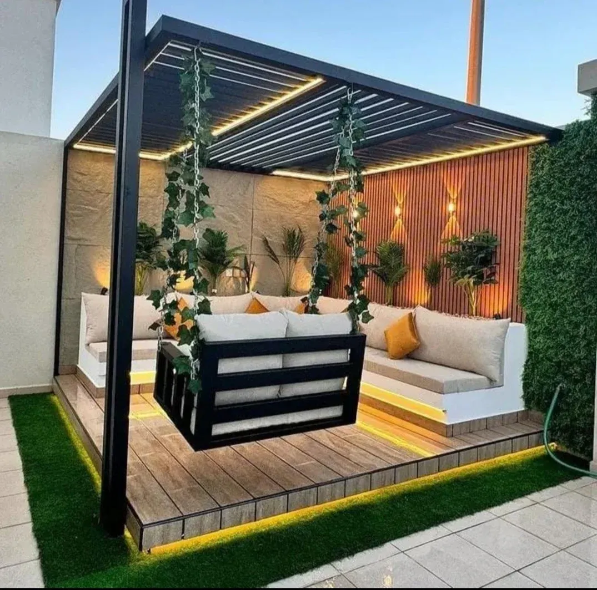

البرجولة عنصر معماري قبل أن تكون مظلة
الفرق الجوهري بين طلب "مظلة" وطلب "برجولة" هو الأولوية: المظلة تحل مشكلة الشمس أولًا، بينما البرجولة تحل مشكلة المساحة الخارجية بمعناها الأوسع — أين نجلس، وكيف يبدو المكان، وهل يمتد الديكور الداخلي إلى الحديقة أم يتوقف عند الباب. لهذا نصمم كل برجولة كجزء من واجهة المنزل، لا كإضافة منفصلة عنها.
الأنواع التي ننفذها
برجولات معدنية مودرن
خطوط نظيفة وألوان محايدة كالأسود والبرونزي، مع إمكانية دمج إضاءة مخفية داخل الهيكل.
برجولات خشبية وأرضيات ديك
دفء الخشب الطبيعي أو بديل الخشب المقاوم للرطوبة، غالبًا مع أرضية خشبية مرتفعة (ديك) مصاحبة.
برجولات الشرائح المتحركة
سقف من شرائح قابلة للتدوير يدويًا أو كهربائيًا، للتحكم بكمية الشمس والتهوية حسب الوقت من اليوم.

برجولات بأعمدة مزخرفة
أعمدة أو جوانب مقصوصة بتقنية CNC بنقوش هندسية، تحويل البرجولة من عنصر وظيفي إلى قطعة ديكور.

برجولات الحدائق
تحديد منطقة جلوس أو تناول طعام في الحديقة، منسقة مع النباتات والإضاءة الخارجية المحيطة.

برجولات مواقف السيارات
استخدام البرجولة كبديل جمالي للمظلة التقليدية، بكمرات معدنية مكشوفة جزئيًا تسمح بتهوية أفضل.
أين تُستخدم البرجولات
- مناطق الجلوس الخارجية: في الحدائق والفناءات وأسطح المنازل.
- حول المسابح: ظل جزئي لا يحجب رؤية الماء بالكامل.
- مداخل ومعارض: عنصر ترحيبي يضيف عمقًا معماريًا لواجهة المدخل.
- مواقف السيارات: بديل جمالي للمظلة التقليدية في الفلل الحديثة.



عوامل تحديد السعر
| العامل | أثره على السعر |
|---|---|
| الخامة (حديد، خشب، بديل خشب، ألمنيوم) | الخشب الطبيعي أعلى تكلفة من المعادن المعالجة |
| نظام السقف (ثابت، شرائح متحركة، قماش، زجاج) | الأنظمة المتحركة والزجاجية أعلى تكلفة إنشائية |
| الإضافات (إضاءة، جدران حديقة، تكسية حجرية) | عناصر اختيارية تُحتسب منفصلة عن الهيكل الأساسي |
| مساحة التغطية | يحدد كمية الخامة والدعامات الإنشائية |
مراحل التنفيذ من التصميم حتى التسليم
- المعاينة: دراسة المساحة واتجاه الشمس خلال اليوم لتحديد أفضل موقع للبرجولة.
- التصميم ثلاثي الأبعاد: عرض نموذج مرئي للعميل قبل اعتماد التنفيذ.
- التصنيع: قص وتشكيل الهيكل في الورشة، وتجهيز أي إضافات كالإضاءة أو الشرائح المتحركة.
- التركيب: نصب الأعمدة والهيكل، ثم تركيب التغطية والإضافات.
- التسليم: فحص نهائي وتسليم وثيقة الضمان.
الضمان وخدمة ما بعد البيع
نقدّم ضمانًا يصل إلى 10 سنوات على الهيكل الإنشائي للبرجولات، ونتابع مع العميل بعد التسليم لمعالجة أي ملاحظة على ثبات الشرائح المتحركة أو التوصيلات الكهربائية للإضاءة خلال فترة الضمان.
نطاق تغطيتنا بجدة ومكة
ننفذ مشاريع البرجولات في جميع أحياء جدة، خصوصًا المناطق ذات الفلل والحدائق الخاصة كأبحر والشاطئ والروضة، إضافة إلى مشاريع مستمرة في مكة المكرمة للمنازل والمنتجعات الخاصة.
صيانة البرجولات
البرجولة تجمع أجزاءً متحركة وثابتة، وكل منها يحتاج نوعًا مختلفًا من المتابعة:
- تشحيم مفصلات الشرائح المتحركة دوريًا لضمان سلاسة الحركة.
- فحص وشد براغي الهيكل المعدني بعد المواسم الريحية.
- تنظيف الأسطح الخشبية أو بديل الخشب من الغبار والرطوبة المتراكمة.
- فحص التوصيلات الكهربائية للإضاءة المدمجة قبل كل صيف.
أسئلة يتكرر سؤالها حول البرجولات
ما الفرق بين البرجولة والمظلة؟+
المظلة تركز على التظليل الكامل، بينما البرجولة عنصر معماري-جمالي يوازن بين الظل الجزئي والضوء والتهوية، وغالبًا يُستخدم كديكور دائم للجلسات الخارجية.
هل يمكن إغلاق البرجولة بالكامل من الشمس والمطر؟+
نعم عبر إضافة تغطية قماشية أو زجاجية أو ألواح شرائح متحركة فوق الهيكل الأساسي.
هل البرجولة الخشبية تحتاج صيانة متكررة في مناخ جدة؟+
أقل من الخشب الطبيعي التقليدي إذا استخدمنا بديل الخشب المعالج، لكنها تحتاج فحصًا دوريًا مثل أي عنصر خارجي.
كم تستغرق مراحل التصميم قبل التنفيذ؟+
نقدم تصميمًا ثلاثي الأبعاد للعميل قبل البدء، وعادة يستغرق الاعتماد بين يومين وأسبوع حسب مدى التعديلات المطلوبة.
ما مدة الضمان على البرجولات المعدنية؟+
نقدّم ضمانًا يصل إلى 10 سنوات على الهيكل الإنشائي حسب نوع الخامة المستخدمة.
هل يمكن دمج البرجولة مع نظام إضاءة ذكي؟+
نعم، يمكن تركيب إضاءة LED قابلة للتحكم بالتطبيق أو بمفتاح عادي داخل هيكل البرجولة.
ما الأنسب لمناخ جدة الحار: البرجولة الخشبية أم المعدنية؟+
المعدنية أو بديل الخشب أقل تأثرًا بالحرارة والرطوبة على المدى الطويل، بينما الخشب الطبيعي يحتاج معالجة دورية أكثر.
هل تصلح البرجولة كبديل كامل عن مظلة السيارة؟+
تصلح جزئيًا في المناطق المعتدلة، لكن للحماية الكاملة من المطر المباشر ننصح بإضافة تغطية علوية مانعة للتسرب.
هل يمكن تركيب برجولة فوق أرضية خشبية مرتفعة (ديك) قائمة؟+
نعم، يمكن تصميم البرجولة لتتوافق مع أرضية قائمة أو تنفيذهما معًا كمشروع واحد متكامل.
هل البرجولات الزجاجية تحتاج تنظيفًا متكررًا؟+
نعم أكثر من الأنظمة المعتمة، خصوصًا في الأجواء الساحلية التي تحمل أملاحًا وأتربة.
ما هي مناطق جدة الأكثر طلبًا لتركيب البرجولات؟+
الأحياء ذات الفلل والحدائق الخاصة كأبحر والشاطئ والروضة تشهد طلبًا مرتفعًا على البرجولات والجلسات الخارجية.